Harness Engineering / Long form
Harness Engineering: the AI model is a commodity, the harness around it isn't
On this page
There's a question everyone asks, "which AI model is best at writing code?", and a question almost nobody asks, the one that decides whether you have a product: what keeps that code standing when the model gets it wrong, or when it changes behavior next week?
The first question is fun and cheap to answer. The second is boring and expensive. This piece is about the second, and I'll carry one example from start to finish.
What a harness is
Anyone who codes already knows the word. A "test harness" is the rig that holds your code while it runs. It sets up the scenario, executes, compares the result against what was expected, isolates the part under test. The code does the work. The harness is what makes the failure show up early, in a controlled place, instead of blowing up in front of a customer. Think of the harness as guardrails: protections and rails that guide the AI agent.
"Harness engineering" is that same rig applied to all AI-assisted work. It's the structure around the model that makes the change it generates safe to accept. It's not a tool you install, there's no command for it, no one to sell it to you. It's a set of components, and the best way to show what each one does is to follow a real change as it passes through them.
One change, no harness
Picture the most banal request in the world. You tell the agent: "add discount codes to checkout." Thirty seconds later it hands you code that compiles, runs, and works in the demo. You approve it. Here's what happens over the next 48 hours with nothing around it:
The agent created a brand-new `discounts` table. Clean. Except your system already stored promotions in a table called `promotions`, and now you have two sources of truth nobody will reconcile. The agent didn't know about `promotions` because nobody told it.
The discount got applied before shipping. You had a "free shipping over $50" rule, and now a 20 percent coupon drops the subtotal below $50 and kills free shipping for people who should have it. Nobody noticed, because nobody tested the old rule after the change.
The discount amount got stored as a . The next week a $19.999999 order shows up in the finance report, and the data team loses an afternoon to it.
And the best one: two coupons stack. A clever customer sums two codes and walks away with 100 percent off. You find out from the billing spreadsheet, three days later, after the damage has already run.
Notice that none of these is "the model is dumb." The model did exactly what it was asked. A better model might have done all of this faster and more elegantly, but it would have done the same thing. What was missing wasn't inside the model. It was around it.
The same change, with harness
Now the same request, with the rig around it. Each harness component catches one of the failures above, and that's how you understand what each one is without memorizing a list.
Retrieval. Before writing, the agent consults your real code and instead of inventing from training memory. It finds the `promotions` table and extends it, instead of creating a parallel `discounts`. is what makes the model work from your reality, not from its imagination.
Tests and characterization. You had a test that locks the "free shipping over $50" rule. The instant the discount starts dropping the subtotal, that test goes red and screams. The change doesn't reach you "working." It reaches you with an alarm pointing at the exact side effect.
Review and QA. A second pair of eyes does the and sees the discount stored as a float. "That'll give you repeating decimals in money, use integer cents." Review, together with , is what turns "looks done" into "is done," and catches the class of error that passes the test but reeks to any experienced human.
CI and rollback. runs the tests on every change, but the coupon stacking slips past everyone and ships anyway, because sometimes it does. The difference is there's a button. turns a bad night into a five-minute , instead of a refund operation and an apology. A bad becomes an inconvenience, not an incident.
Accountability. When the error shows up in the billing number, there's a named person accountable for it. Not "the agent did it." A human who looks, decides, and answers. Automation with no owner is an orphan the first time it's wrong.
These five aren't a checklist I invented. They're what separates "worked in the demo" from "survived contact with a real customer." And notice what happened to the example: the model stayed the same. All that changed was the structure around it.

This isn't my opinion, it's how serious teams talk
If this still sounds like a blog thesis, notice where the people actually building this landed, starting from different places.
In its engineering writeup Building Effective Agents, Anthropic recommends starting with the simplest solution that works and only adding complexity when the problem demands it. And it says to treat the "agent-computer interface," the tools the model uses, with the same rigor as a human UI. A model lab saying the win is in the rig and the patterns, not in piling on capability.
The cleanest empirical evidence comes from SWE-agent, out of a Princeton/Stanford team. They took the same model and only improved the interface it uses to read, navigate, edit, and run code. That alone took the model to resolving 12.5 percent of real SWE-bench issues on the first try, far above what the same kind of model delivered without that interface. Same brain, better rig, better number. The whole argument as a controlled experiment.
From the investor and the production side, the message holds. Matt Bornstein and Rajko Radovanovic, at a16z, in Emerging Architectures for LLM Applications, treat the foundation model as an increasingly swappable part, with differentiation living in the orchestration layer. And Hamel Husain, in Your AI Product Needs Evals, argues that what unblocks an AI product isn't swapping models or fiddling with prompts, it's having an automated evaluation system that creates the feedback loop. That evaluation system is part of the harness.
Where the argument hurts
If I stopped here it'd be marketing. There are two strong objections, and dodging them would be dishonest.
The first is Rich Sutton's Bitter Lesson. The history of AI shows that general methods that scale with compute eventually beat the structures humans hand-build. Read against agents, it becomes this: your harness is a temporary crutch, the next model absorbs half of it. And it's partly true. In 2023 it was fashionable to build elaborate contraptions around the model, layer upon layer of rules and automation, to try to make it autonomous. Most of that turned to dust when models improved and a simple loop became enough.
The second comes from Simon Willison, who coined the lethal trifecta. When an agent simultaneously has access to private data, exposure to untrusted content, and a channel to send information out, you have an exfiltration route. And those three things are exactly what a capable harness delivers. The rig that grants you power is the same rig that grants you an attack surface.
I take both seriously. And the conclusion still doesn't change. It gets more precise.
What the model doesn't absorb
The Bitter Lesson eats the clever part of the harness, the prompt tricks and the elaborate contraptions around the model. Good, let it. That's not what I'm talking about.
Go back to the coupon example. What does the next, smarter model solve on its own? It invents fewer duplicate tables, writes fewer float bugs. Maybe it needs less retrieval because it arrives more grounded. But look at what it doesn't hand you for free: who approves the , what the is if it's still wrong, what triggers the rollback when coupons stack, who the person is that answers when billing drops. A better model doesn't give you accountability. It just makes unreviewed change cheaper, and cheaper unreviewed change, with no harness, isn't a win, it's a liability you're scaling. Willison's lethal trifecta points the same way: the answer isn't a smarter model, it's a perimeter decision, namely what this agent can touch and where it's allowed to talk.
"It works" is not the bar. "It survives contact with a real customer" is the bar. The distance between the two is the harness.
The position
The tool matters less than the harness around it. Not because the tool is irrelevant, it matters and it improves fast, but because the part that decides whether you have a durable product is precisely the part no new model hands you for free: retrieval to ground, tests to warn, review to hold, rollback to undo, and an owner to answer.
The honest way to measure maturity here isn't "which model do you use." It's "how much of your house falls down if you swap the model tomorrow." If a lot falls, you bought a tool thinking it was structure.